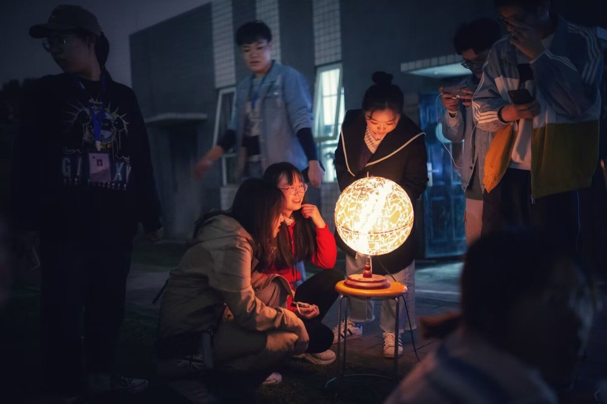
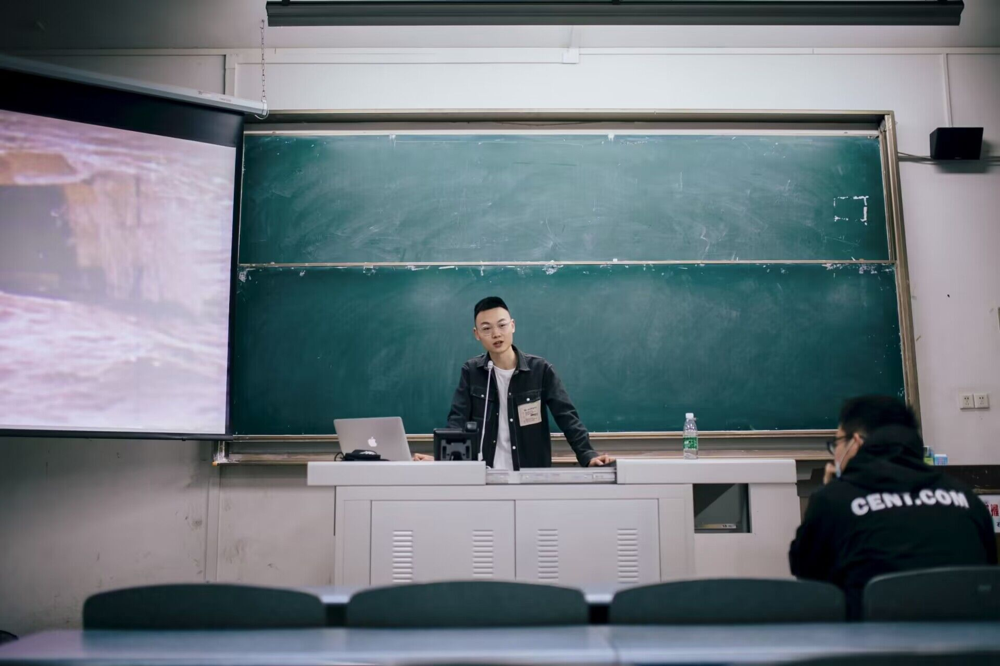

关于辰空天文社

辰空天文社始创建于2017年12月。”天文学（Astronomy），是观察和研究宇宙间天体的学科，是自然科学中的一门基础学科。
天文学与其他自然科学的一个显著不同之处在于，天文学的主要实验方法是观测，通过观测来收集天体的各种信息。因而本社团的宗旨立足于观测和分享天文知识，面向所有的天文爱好者，对涉及的天文常识性问题进行交流。增强大学生积极参与探讨天文学奥妙的意识，更深入了解我国的航天事业。
- 
除此之外，本社团还设有财务部、宣传部、技术部，常务部等部门。 本社团会组织观星活动和天文望远镜使用教学活动，以及每月一次的户外观星及摄影，知识讲座竞赛，通过这些形式来培养会员对天文，对星空的兴趣。会员们在对浩瀚星空的学习和观测中，不断寻找着人生中属于自己那颗领航星的同时也了解了不少天文知识。我们将会举办更多受众广泛有教育意义的活动，希望让更多人了解热爱天文，提升他们对知识的渴望与探索能力。